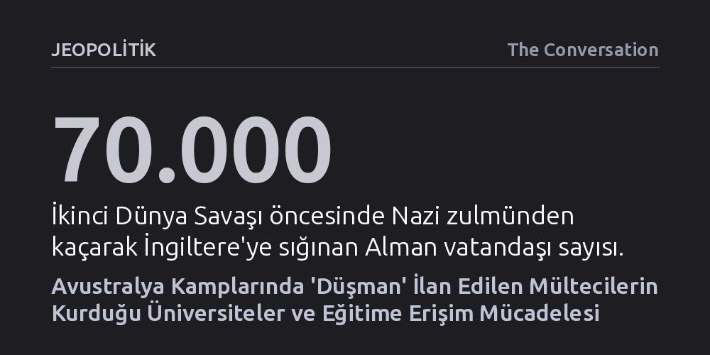

JEOPOLITIK · The Conversation · 2026-10-23
İkinci Dünya Savaşı'nda Avustralya kamplarına hapsedilen mülteci aydınların kurduğu üniversiteler, sığınmacıların eğitime erişimi bürokrasiye rağmen kendi olanaklarıyla nasıl sağladığını gösteriyor. Bu tarihi deneyim, günümüz iltica merkezlerinde eğitime erişimi kısıtlayan katı göç rejimlerine karşı alternatif bir direnç modeli sunuyor.
Mültecileri yalnızca yardıma muhtaç pasif kurbanlar olarak değil, en ağır tecrit koşullarında bile kendi kurumsal eğitim yapılarını inşa edebilen bağımsız özneler olarak görmemizi sağlar.

İkinci Dünya Savaşı patlak vermeden hemen önce yaklaşık 70 bin Alman vatandaşı, Nazi rejiminin baskılarından ve ırkçı yasalarından kaçarak İngiltere'ye sığındı. Ancak Eylül 1939'da savaş resmen başladığında, İngiliz hükümeti bu sığınmacıları güvenlik tehdidi olarak kodlayarak 'düşman yabancı' ilan etti. Benzer bir tutum Avustralya'da da sergilendi ve ülkedeki Alman ya da Avusturya kökenliler hızla gözaltı kamplarında tecrit edildi. İngiltere'deki kamplarda yer kalmayınca, binlerce insan deniz aşırı kolonilere sürülmeye başlandı.
Bu sürgün dalgasının en dramatik sembolü, 10 Temmuz 1940'ta Liverpool'dan yola çıkan HMT Dunera gemisiydi. Gemide Nazi zulmünden kaçmış saygın profesörler, yargıçlar, sanatçılar, dilbilimciler ve eğitimleri yarıda kalmış liseli gençler dahil yaklaşık 2.500 tutuklu bulunuyordu. Avustralya'ya uzanan 57 günlük zorlu okyanus yolculuğu sırasında bu aydın topluluk, esaret koşullarına boyun eğmek yerine kendi anayasalarını kaleme aldı ve gemide kendi üniversitelerini kurdu.
Avustralya kıyılarına ulaştıklarında Victoria eyaletindeki Tatura ve Yeni Güney Galler'deki Hay kamplarına dağıtıldılar. Ancak gemide temelleri atılan akademi yok olmadı; aksine dikenli tellerin arkasında çok dilli, zengin ve disiplinli bir yükseköğrenim kurumuna dönüştü.
Tatura kampında kurulan bu sıra dışı kuruma 'Collegium Taturense' adı verildi ve rektör yardımcılığı görevine Berlinli tanınmış bir yargıç ve hukukçu olan Leonhard Adam getirildi. Adam, Yahudi kökenleri nedeniyle 1933 yılında Nazi ırk yasaları uyarınca mesleğinden men edilmiş, İngiltere'ye kaçmış, fakat savaş patlak verince tutuklanıp Man Adası üzerinden Dunera gemisiyle Avustralya'ya sürülmüştü.
Adam ve beraberindeki akademisyenler, kampta Malayca ve Yunancadan yüksek matematiğe, felsefeden muhasebeye, caz müziğinden moda illüstrasyonuna kadar uzanan çok yönlü bir ders programı tasarladı. Adam'ın kendisi kamu hukuku, ticaret hukuku, Çince ve etnoloji dersleri veriyor; bir yandan da kamp yaşamını resmediyordu.
Bu zorunlu sürgün, Adam'ın entelektüel serüveninde derin bir kırılma yarattı. Birinci Dünya Savaşı sırasında Almanya'daki savaş esirleri arasında Avustralya Yerlileriyle tanışmış olan Adam, Tatura'da edindiği birikimi derinleştirerek Yerli hukuku ve antropolojisi üzerine yoğunlaştı. 1942'de kamptan tahliye edildikten sonra Melbourne Üniversitesi'nde araştırmacı olarak görev aldı ve Avustralya'nın en kapsamlı İlk Uluslar sanat ve etnografya koleksiyonlarından birini oluşturdu.
Collegium Taturense'nin en kritik hedeflerinden biri, savaş nedeniyle eğitimi kesintiye uğrayan gençlerin geleceğini kurtarmaktı. Bu gençlerin önemli bir bölümü, Nazi Almanyası'ndan çocukları kurtarmayı amaçlayan 'Kindertransport' programıyla İngiltere'ye getirilmiş, ancak 16 yaşına bastıkları anda düşman yabancı kategorisine sokularak Avustralya'daki kamplara gönderilmişti.
Tıp eğitimi almak isteyen Kurt Henle bu gençlerden biriydi. Kamptaki tutuklu akademisyenler, Henle'nin Victoria eyaleti lise müfredatını eksiksiz takip etmesini sağlayarak onu üniversite girişine hazırladı. Annesi Clara Henle New York'tan Avustralyalı bir Quaker sivil toplum gönüllüsü olan Margaret Pierce'a mektuplar yazarak oğlunun eğitimine destek olmasını rica etti. Pierce'ın yoğun çabaları sonucunda Melbourne Üniversitesi, savaş koşullarında artan hekim ihtiyacını gerekçe göstererek Henle'ye tıp fakültesinde bir kontenjan sundu.
Fakat üniversite kapısı aralanmışken bürokrasinin acımasız dişlileri devreye girdi. Avustralya hükümeti, Henle'nin üniversiteye başlayabilmesi için kamptan salıverilmesi talebini kesin bir dille reddetti. Hükümetin yanıtı, sığınmacılara dönük kurumsal katılığı gözler önüne seriyordu: 18 yaşına basmış bir erkeğin kamptan tahliyesinin tek yasal gerekçesi ancak Avustralya ordusuna katılması olabilirdi. Henle ancak savaş bittikten sonra İngiltere ve ABD'de eğitimini tamamlayıp saygın bir gastroenteroloji profesörü olabildi.
Avustralya'da sığınmacıların eğitime erişimini engelleyen bürokratik mekanizmalar İkinci Dünya Savaşı ile sınırlı kalmadı; modern göç rejimlerinde de biçim değiştirerek devam etti. 1999 yılında yürürlüğe sokulan geçici koruma vizesi uygulaması, deniz yoluyla gelen sığınmacıları 'uluslararası öğrenci' statüsünde tam harç ödemeye mecbur bırakarak üniversite eğitimini onlar için ulaşılamaz kıldı. Onlarca yıl süren sivil savunuculuk faaliyetlerinin ardından bu dışlayıcı rejim ancak 2023'te esnetilebildi ve yaklaşık 31 bin mülteciye devlet destekli yükseköğrenim hakkı tanındı.
Devletlerin koyduğu yasal ve mekânsal barikatlara rağmen sığınmacıların kendi okullarını kurma iradesi günümüzde de canlılığını koruyor. Örneğin 2014 yılında Endonezya'nın Cisarua kasabasında Afgan Hazaraların kurduğu okul, bugün geniş bir eğitim ağına dönüşmüş durumda. Benzer şekilde Avustralya'daki Villawood göçmen gözaltı merkezinde tutulan sığınmacılar, merkezi ziyaret eden vatandaşlara ülkenin sığınma politikalarını anlatıp farkındalık yaratarak bir tür kamusal eğitim alanı kuruyor.
Tarihsel deneyim, sığınmacıların yalnızca birer 'koruma nesnesi' değil; kapatıldıkları en ağır tecrit koşullarında bile bilgiyi örgütleyerek varoluşlarını savunan bağımsız özneler olduğunu kanıtlıyor. Günümüzde pilot uygulaması yapılan üniversite temelli mülteci yerleştirme programları, yükseköğrenimi bürokratik bir lütuf olarak değil, sığınmacıların toplumsal yaşama katılımının kurucu bir zemini olarak yeniden ele almanın zorunlu olduğunu gösteriyor.